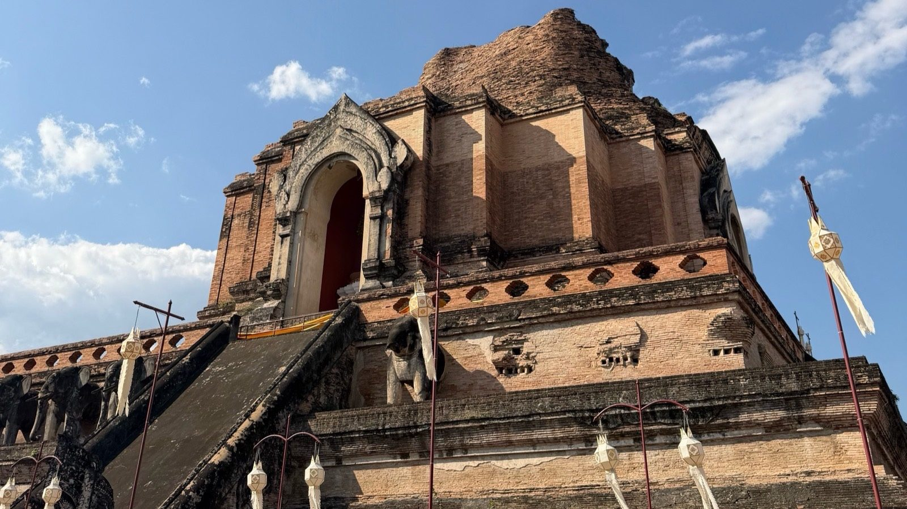
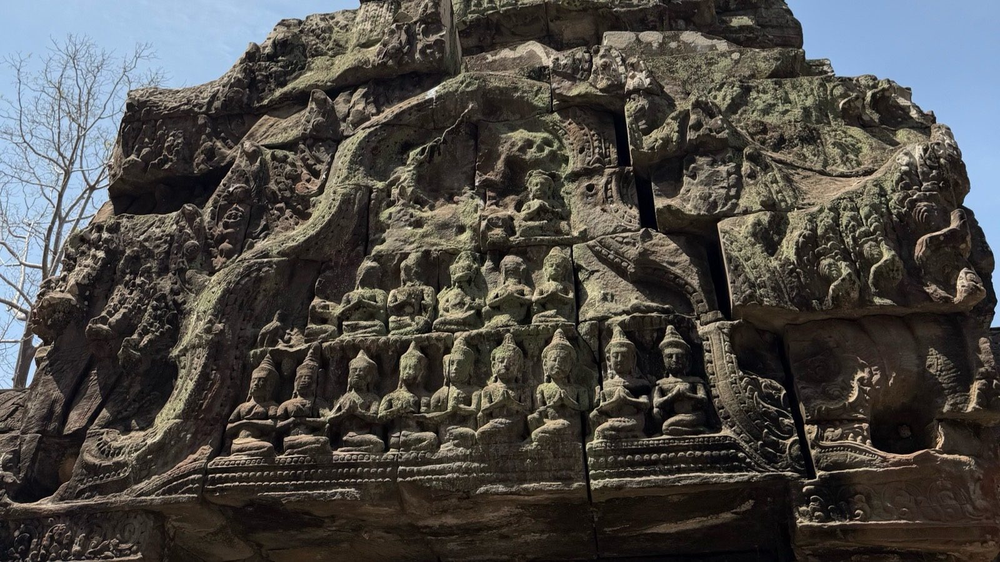

Thailand · Cambodia · Laos · Vietnam
A journey through Southeast Asia: the places I explored, the food I found, and the moments I
brought home.
Thailand

Thailand was where my trip began. I started in Bangkok with Wat Arun, golden Buddhas, and late-night
tuk-tuk rides, headed north to Chiang Mai for its temples, elephants, and khao soi, then finished on
Phuket for Songkran, beach sunsets, night markets, and plenty of street food.
Tap a place to see
its photos.
Bangkok
Bangkok was where my trip began. I visited Wat Arun on the Chao Phraya River and temples full of
golden Buddhas and giant guardian statues, explored Chinatown’s neon streets, went to a Muay
Thai fight night at a big stadium, and took late-night tuk-tuk rides. The malls here are on
another level (one even has a giant sleeping dog), and the hostel gym used concrete blocks for
dumbbells.
Chiang Mai
Chiang Mai is northern Thailand’s cultural center. I visited the huge, half-ruined chedi of Wat
Chedi Luang and brought flower offerings to the temples in the old city. I also saw elephants,
capybaras, and flamingos at the zoo, and tried the Grand Canyon water park, which is basically
real-life Wipeout. The food was nonstop: khao soi, night market skewers, street sushi, and
somehow even birria tacos.
Phuket
Phuket is Thailand’s largest island, on the Andaman Sea. I was there for Songkran, the Thai New
Year water festival, with foam parties, a music show, and crowds where everyone gets soaked. I
also watched sunsets over the sea, explored Naka Weekend Market and the Sunday market, got my
first haircut in Thailand, and painted Hello Kitty figures just to get a seat to eat. The food
ranged from pad kra pao to crocodile skewers.
Cambodia

From Phuket I flew to Cambodia. In Siem Reap I explored the temples of Angkor, including Angkor Wat
and Ta Prohm, and spent the evenings on Pub Street and at the night markets. Then I traveled south
to the capital, Phnom Penh, before crossing the border into Laos.
Tap a place to see
its photos.
Siem Reap
Siem Reap is the gateway to the temples of Angkor. I arrived by tuk-tuk at sunset, watched the
sun rise over Angkor Wat, one of the largest religious monuments in the world, and explored Ta
Prohm, where giant trees grow straight through the stone. After the temples it was Pub Street,
the night markets, and 70-cent beers. Siem Reap is also where I got food poisoning, and for 3
days the only thing I could eat was ramen.
Phnom Penh
Phnom Penh is Cambodia’s capital, where the Mekong and Tonlé Sap rivers meet. I visited the
Royal Palace and the riverfront, and learned about the Khmer Rouge at the Tuol Sleng Genocide
Museum and the Choeung Ek memorial, the Killing Fields. It was really tough to learn about. In
between I ate beef lok lak, played chess at a cafe, and wandered the neon-lit alleys at night
before heading on to Laos.
Laos
Laos was the slowest and most peaceful part of my trip. I crossed the border from Cambodia to Don Det
in the 4,000 Islands, made my way north to Luang Prabang for its gilded temples, Mekong sunsets, and
the turquoise pools of Kuang Si Falls, and finished in Vang Vieng, where hot-air balloons rise over
the mountains at sunrise.
Tap a place to see
its photos.
Luang Prabang
Luang Prabang is a quiet town in northern Laos, full of gold-covered temples with sweeping
roofs. I watched the sun set over the Mekong, visited Kuang Si Falls, where the water really is
that turquoise, and browsed the night market, where some of the bracelets and spoons are made
from the metal of bombs dropped on Laos during the war. I also ate chicken laap with sticky rice
and a Beerlao, and wood-fired pizza.
Vang Vieng
Vang Vieng had some of the most dramatic scenery of the trip. Limestone mountains surround the
town, and seeing hot-air balloons rise over the valley at sunrise was incredible. I took in the
valley from a viewpoint above town, watched cows walk down the main street at night, and had a
Cuban sandwich that was surprisingly really good.
Don Det
Don Det was my first stop in Laos after crossing the border from Cambodia. It sits in the 4,000
Islands region, where the Mekong breaks into rapids and waterfalls, and I watched the sun set
over the river. This part of the trip was much more relaxed, although I did go through three
crates of Beerlao with people I had just met, and found locals throwing dice.
Vietnam
I traveled Vietnam from north to south, from the mountains to the cities and eventually down to the
beaches. Every stop felt completely different, but the people, the food, and the atmosphere made the
whole country special to me. These are some of the places and moments that stood out along the way.
Tap a place to see
its photos.
Hanoi
Hanoi was my first stop in Vietnam, and it set the tone for the whole country. I wandered
streets strung with red flags, visited St. Joseph’s Cathedral, the Temple of Literature, and the
Vietnam Military History Museum, watched a water puppet show and a calligrapher at work, caught
a Hanoi vs. HCMC football match, and squeezed against the wall as the train rolled down Train
Street. The food was the highlight: phở from a Michelin-starred restaurant, bún chả, bánh mì,
egg coffee that tastes almost like tiramisu, and even egg beer. The McDonald’s, not so much.
Sapa
Sapa is a mountain town in the far northwest, and it was wrapped in fog for most of my visit. I
rode the mountain train and made it to the top of Fansipan, the highest peak in Indochina at
3,143 m, where the temples and statues kept disappearing into the clouds. I also explored Cat
Cat Village, watched local women draw batik patterns before dyeing the cloth with natural
indigo, and tried horse meat with sticky rice, which was honestly really good.
Ha Giang Loop
The Ha Giang Loop is a multi-day motorbike trip through the mountains near the Chinese border,
on switchback roads like the one in this site’s background. Every turn opened up another valley.
Along the way I saw motorbikes carrying unbelievable loads, stopped at lookouts marked with
Vietnamese flags, and shared big family-style dinners with the group, who quickly became my Ha
Giang tour fam.
Ninh Binh
Ninh Binh is known as “Ha Long Bay on land”: limestone karsts rising out of rice fields and
rivers. I climbed to the top of Hang Mua for the view, took a boat ride along the river and
through low caves, and explored the lantern-lit old town. For food, I tried the local specialty,
mountain goat, plus pig ear and a banana chocolate waffle for dessert.
Phong Nha
Phong Nha is home to some of the largest caves in the world. I explored Paradise Cave, which is
far bigger than any photo can show, took in the river and jungle-covered mountains, and fed a
very enthusiastic flock of ducks.
Hue
Hue was Vietnam’s imperial capital, on the Perfume River. I visited the Citadel and the Imperial
City, saw Truong Tien Bridge at sunset, and explored the abandoned Thuy Tien water park outside
the city, where a giant graffiti-covered dragon sits in the middle of a lake. You can even climb
up and look out from inside its mouth. Hue also had one of the best salads I’ve ever had.
Hoi An & Da Nang
Hoi An’s old town is a UNESCO World Heritage Site about 30 km from the beach city of Da Nang. At
night the river fills with lantern boats and people play bài chòi, a kind of folk bingo with
singing. I made my own lantern, took a cooking class, and took a coffee class where I made egg
coffee and coconut coffee myself.
Da Lat
Da Lat is a cool highland city surrounded by pine forests. I rode the alpine coaster through the
trees, raced go-karts that felt like real-life Mario Kart, climbed the twisting stairs of Crazy
House, and found art everywhere, from giant cassette tapes to the forest spirit Thần Rừng. In
the evenings I went to the night market for street food and bánh tráng nướng, often called
“Vietnamese pizza.”
Ho Chi Minh City
Ho Chi Minh City, formerly Saigon, is Vietnam’s largest city. I visited the Central Post Office
and the War Remnants Museum, then went out to the Cu Chi tunnels, where I squeezed into one of
the tunnel entrances. At night it was all neon: bridges lit up, lantern-lit alleys, and Bui Vien
walking street. I ate cơm tấm (broken rice) and pizza at 4P’s.
Phu Quoc
Phu Quoc is an island off Vietnam’s southwest coast. I spent my time between Grand World, with
its Venice-style canals and a clock tower that lights up at night, and Starfish Beach at sunset.
Add cozy cafes, seafood phở, and flaming B-52 shots, and it was a great island break.
About Me
Hi, I’m Christopher. I’ve spent the last 7+ years working in IT, with the last few focused
heavily on systems and infrastructure. I’m now transitioning into cloud engineering and have
earned certifications in AWS and Terraform along the way. Carpio Travel is one of the projects
I’m building to put those skills into practice while also sharing something I genuinely love:
traveling.
How this site is built
Amazon S3: stores the website files in a private bucket that is not
publicly accessible.
Amazon CloudFront: delivers the site globally through AWS edge locations
over HTTPS.
Amazon Route 53: hosts DNS for carpiotravel.com, with alias records
pointing the domain and www at CloudFront.
AWS Certificate Manager: provides the TLS certificate for HTTPS,
validated through DNS so it renews automatically.
Origin Access Control: allows CloudFront to securely access the private S3
bucket.
Terraform: provisions and manages the AWS infrastructure as code.
GitHub Actions: deploys the site automatically on every push to main,
using OIDC to get short-lived AWS credentials (no stored access keys).